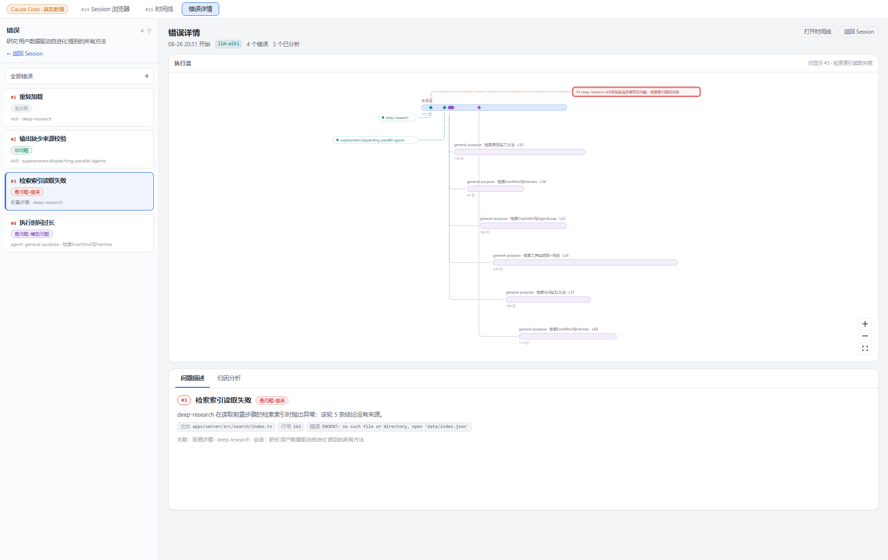
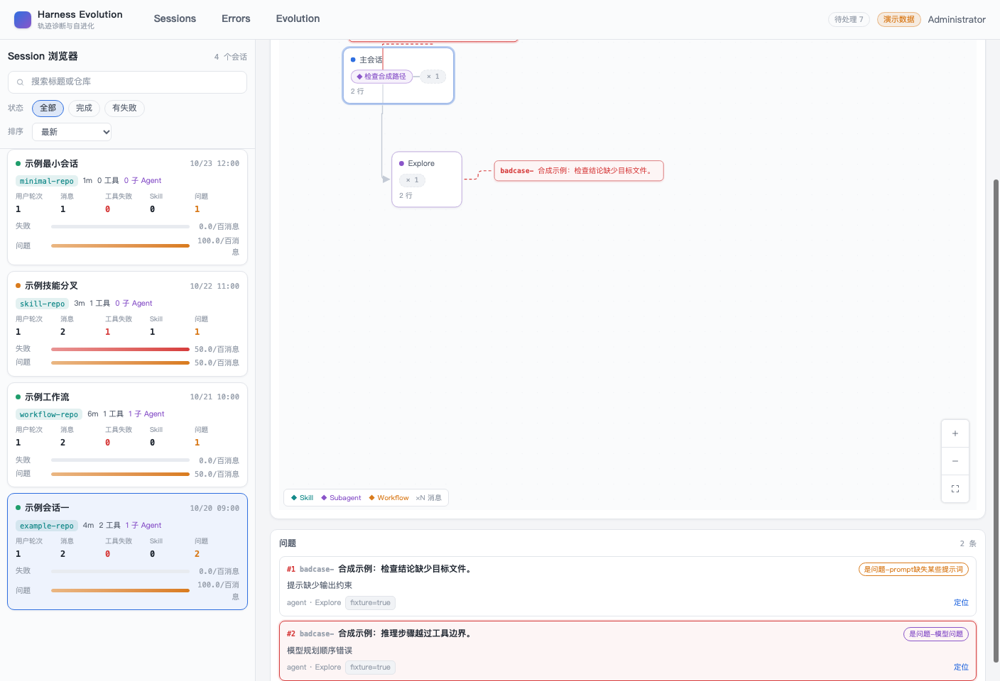
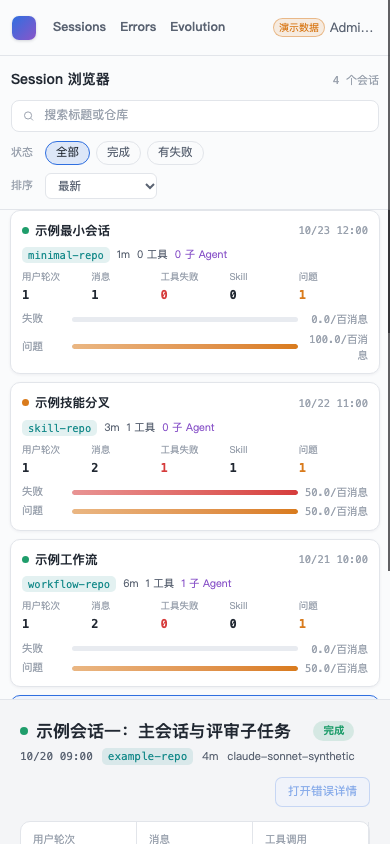

- Issue
- #48 · m4-03 problem cards
- PR
- #116
- Commit
- f4eef0f
- Runtime
- FastAPI + Vite + Chrome CDP
- Evidence mode
- Headless Chrome; native CUA unavailable while macOS session locked
Harness Evolution · PR #116
M4-03 问题卡集成冒烟报告
在真实 FastAPI、SQLite、Vite 与 Chrome 环境中验证五态问题卡、四类锚点连线、列表与画布双向定位、折叠宿主展开和响应式布局。
2/2真实 Chrome E2E
5问题状态
0控制台异常
230Web 测试通过
Environment and Artifact
2026-10-26 · Chrome headless CDP · 1408×960 / 390×844Scenario Matrix
11 pass| # | 场景 | 结果 | 观测 | 证据 |
|---|---|---|---|---|
| 01 | 五态问题卡 | PASS | 四个 fixture Session 合计展示未分析、非问题、模型问题、prompt 缺失和错误五态。 | 真实 Chrome E2E 列表与画布 badCaseId 对齐 |
| 02 | 锚点连接语义 | PASS | self+agent、self+skill、discovery 与 fallback 分别生成对应连接线；坏锚点不生成孤儿边。 | 布局单测 E2E 边计数 |
| 03 | 同锚点稳定堆叠 | PASS | 不同 eventIndex 与相同锚点的问题卡均按可见矩形去重堆叠，不重叠。 | layout.test.ts BadCaseNode.test.ts |
| 04 | 列表定位画布 | PASS | 点击问题列表行后唯一画布卡居中并高亮。 | screenshots/01-desktop.png m4 problem cards E2E |
| 05 | 画布定位列表 | PASS | 点击画布问题卡后对应列表行滚动到可视区域并保持唯一 active。 | m4 problem cards E2E |
| 06 | 折叠宿主问题恢复 | PASS | 问题宿主位于 9 子 Agent 折叠分支时，选择问题自动展开祖先，问题卡展开并在延迟 fitView 后仍保持居中。 | m4 problem cards reveal a selected problem inside a folded branch |
| 07 | 动态卡宽 | PASS | 卡片按文本测量宽度并限制在原型范围，定位使用实际宽度的一半。 | layout.test.ts BadCaseNode.test.ts |
| 08 | 独立三态 | PASS | 问题列表加载、失败、重试和空态不阻塞 Session 概要与执行流。 | Index.test.ts BadCaseList.test.ts |
| 09 | 1408px 桌面 | PASS | 原型亮色壳、360px Session 侧栏、问题卡和列表同屏，无页面横向溢出。 | screenshots/01-desktop.png |
| 10 | 390px 移动布局 | PASS | 问题卡页面进入单列布局，scrollWidth 与 clientWidth 均为 390。 | screenshots/02-mobile.png |
| 11 | 控制台与范围边界 | PASS | 正常路径控制台无 warning/error；未渲染 m4-04 问题详情或归因双 Tab。 | browser violations=[] issue 非目标核对 |
Issues and Observations
No defects foundNo defects were found.
Evidence
3 screenshots


Automated Coverage Assessment
4 areas reviewed| 区域 | 覆盖 | 结论 | 建议 |
|---|---|---|---|
| 问题状态 | Web 单测 + 真实 Chrome E2E | 五态列表与画布 ID 一致性已验证。 | 保持 fixture 五态覆盖。 |
| 布局锚点 | 纯函数 + 浏览器 | 四类连线、堆叠、坏锚点和折叠恢复通过。 | 后续 m4-04 详情页沿用 badCaseId。 |
| 响应式 | 真实 Chrome 1408/390 | 无页面横向溢出，亮色原型视觉保持。 | 领域详情页继续使用同一 token。 |
| 原生 Computer Use | 受 macOS 锁屏阻塞 | 使用真实 headless Chrome/CDP，未伪报为原生 CUA。 | 解锁后可复跑原生截图。 |
Conclusion
通过当前提交的问题可视化与原型对齐，列表和画布联动、折叠恢复和响应式行为均通过。
- 未发现未解决产品缺陷。
- m4-04 错误详情与归因双 Tab 保持独立边界。
- 证据来自真实 API、SQLite、Vite 与 Chrome。
证据源：真实 Chrome CDP、自动化断言与原型截图。HTML 由 renderer 生成，不应手改。